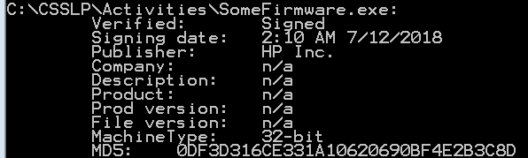

Typically, separation of duties and rotation of duties are
exemplified within the banking sector. For example, some bank employees are required
to take mandatory vacations that may span up to two weeks. Based on what we have
discussed regarding integrity mechanisms, think about how each of the concepts might
be applied to secure software development.
Instructions
Consider the following question. Be prepared to share your
thoughts with the class. How might need-to-know, separation of duties, and rotation
of duties be leveraged to enhance integrity within operational security when
developing software?
Activity: Digitally Signed Code
Code signing is a safeguard to reduce the risk of forgery and
tampering with code in the software supply chain. It provides for integrity and
source authentication and is considered a common control during the development,
build, and distribution of the software. During this activity, a command line
utility was utilized to produce the output shown here regarding the digital
signature on a firmware downloaded from the Web.

Figure: Digitally Signed Code
Instructions
Essay Question
Group
Question 1
From the output above, what objective
can “0DF3D316CE331A10620690BF4E2B3C8D” (produced digest) be
used to achieve? Select one answer and provide a rationale
for your selection.
A. Confidentiality
B. Integrity
C. Availability
D. Authenticity
E. Both confidentiality and integrity
F. Both confidentiality and authenticity
Feedback
Feedback
Discussion: Trusted Software
You work for a software company that produces plug-ins for
popular productivity software. The organization hosts all the plug-ins on the
company’s external facing webpage for consumers to download. The organization wants
to give confidence to consumers when they download the plug-in that the organization
is the author of the software, and that the plug-in has been downloaded in an
unadulterated state.
Be prepared to share your thoughts with the class based on the
following questions.
As a security practitioner, would you recommend your company use digital
signatures or code signing? Why?
How would you describe the use case for the mechanism NOT selected for the
previous answer?
Domain 1
Discussion: Version Control
Typically, separation of duties and rotation of duties are exemplified within the banking sector. For example, some bank employees are required to take mandatory vacations that may span up to two weeks. Based on what we have discussed regarding integrity mechanisms, think about how each of the concepts might be applied to secure software development.
Instructions
Consider the following question. Be prepared to share your thoughts with the class. How might need-to-know, separation of duties, and rotation of duties be leveraged to enhance integrity within operational security when developing software?
Activity: Digitally Signed Code
Code signing is a safeguard to reduce the risk of forgery and tampering with code in the software supply chain. It provides for integrity and source authentication and is considered a common control during the development, build, and distribution of the software. During this activity, a command line utility was utilized to produce the output shown here regarding the digital signature on a firmware downloaded from the Web.
Figure: Digitally Signed Code
Instructions
Essay Question Group
Question 1
From the output above, what objective can “0DF3D316CE331A10620690BF4E2B3C8D” (produced digest) be used to achieve? Select one answer and provide a rationale for your selection.
A. Confidentiality
B. Integrity
C. Availability
D. Authenticity
E. Both confidentiality and integrity
F. Both confidentiality and authenticity
Discussion: Trusted Software
You work for a software company that produces plug-ins for popular productivity software. The organization hosts all the plug-ins on the company’s external facing webpage for consumers to download. The organization wants to give confidence to consumers when they download the plug-in that the organization is the author of the software, and that the plug-in has been downloaded in an unadulterated state.
Be prepared to share your thoughts with the class based on the following questions.